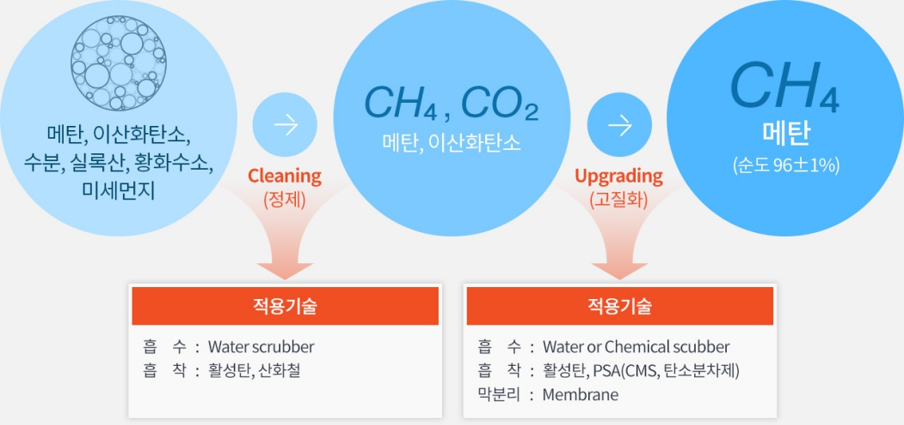

<div id="single-portfolio">
	<div id="portfolio-details" class="container">
		<a class="close-folio-item" href="#"><i class="fa fa-times"></i></a>
		
		<div class="row">
			<div class="col-sm-9">
				<div class="project-info">
					<h3>아이디어 설계</h3>
					<p>바이오가스는 산소가 없는 환경에서 유기물이 분해되면서 생산되는 다양한 기체의 혼합물 가리킨다. 이는 농업쓰레기, 일반 쓰레기, 시물 물질, 오물, 음식물 쓰레기와 같은 원료로 만들어 진다.</p>
					<p>인도네시아는 연중 따뜻한 나라이기 때문에 발효환경이 좋고, 대부분의 시골 사람들이 가축을 기르기 때문에 가축 분뇨와 공동화장실에서 버려지는 오물을 활용할 것이다.</p>
				</div>
            </div>
		</div>
	</div>
</div>